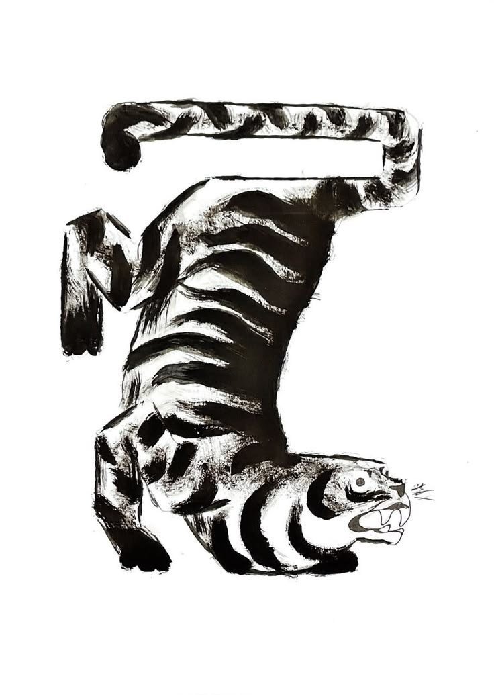
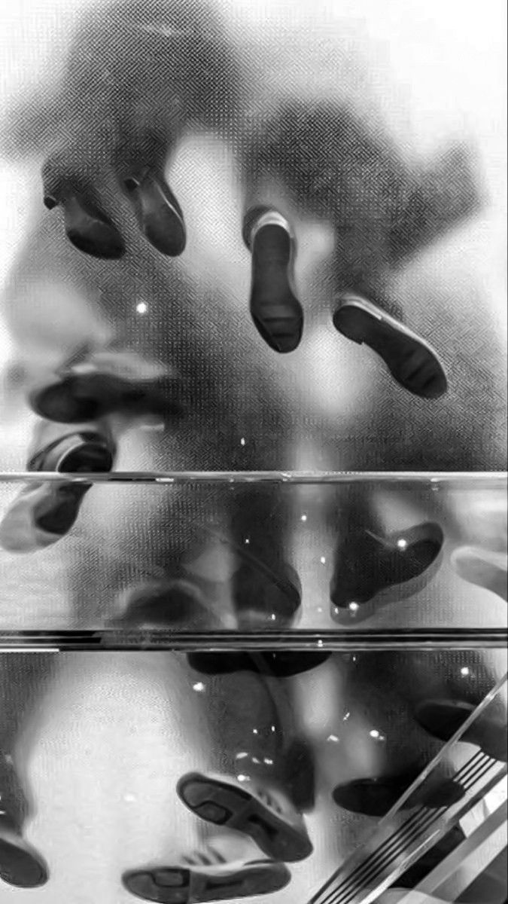
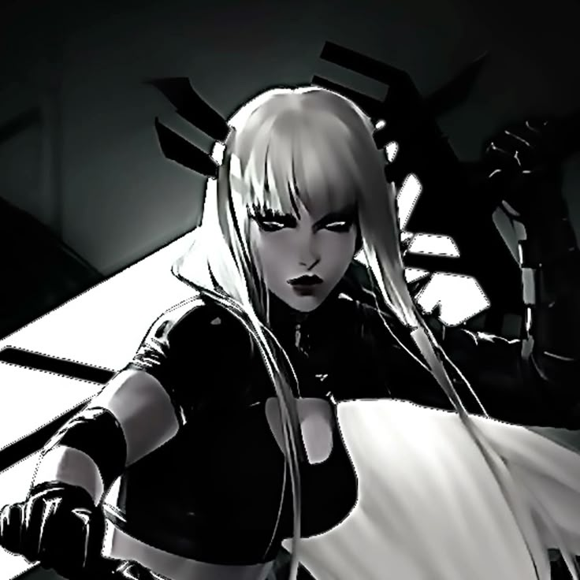
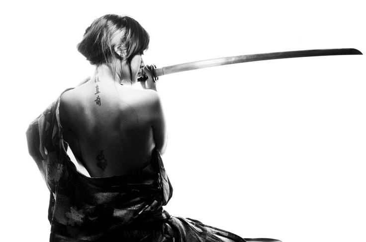
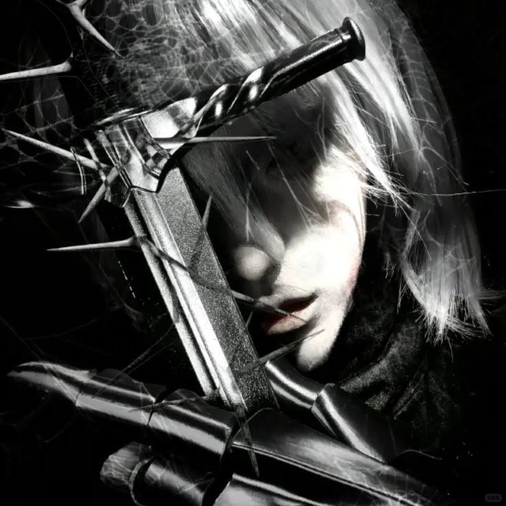
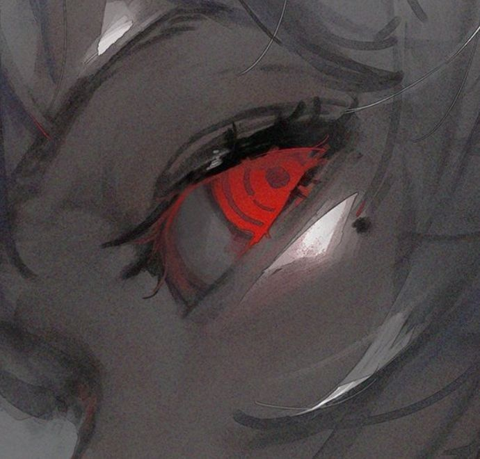
Une femme à l'allure douce, calme, presque apainsante pour ainsi dire. Elle garde, malgré ses origines, un très grand respect vis à vis des autres populations ainsi que pour les Volontés. Selon elle, ce sont grâce à elles si ce monde existe aujourd'hui. Malgré son grand calme et sa douceur en première apparence, Isyra est capable d'actions des plus violentes ou cruelles à l'aide de ses années d'entraînement. Elle a aussi horreur du contact physique, même un effleurement pourrait la mettre à fleur de peau, personne ne sait pourquoi, enfin presque. Elle est apaisante, certes, mais en elle se cache un véritable chaos émotionnel, nottament pour ses propres valeurs. Elle dit haïr l'obession pour la perfection, or, c'est en avançant que l'envie d'exceller la gagne un peu plus chaque jour, c'est une corrosion lente qui l'enferme avec le temps. En réalité, elle se montre sûre d'elle, confiante, mais le fait est, la pauvre est perdue dans le brouillard de son esprit et si cela continue, sa vie ne ressemblera qu'à une lamentable tentative de survivre.
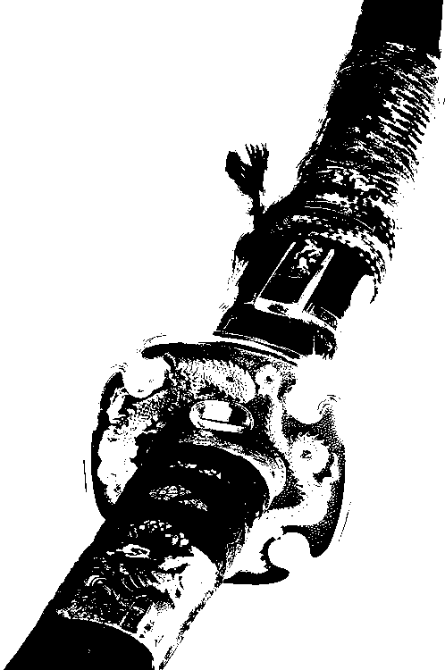
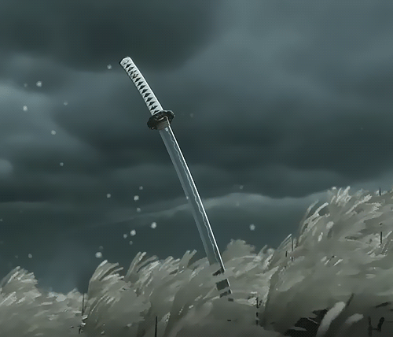
Un sabre légué de génération en génération à chaque héritier direct du possesseur.
Cette arme qui peut sembler annodine au premier regard, est en fait l'objet de bien nombre de disputes, jaloux, envieurs et complots au sein de cette même famille. La lame des Kurozova symbolise la pureté absolue de son porteur, l'ascension à son paroxysme, les valeurs les plus nobles qui soient, en bref, la perfection la plus proche possible qui soit. Elle fut forgée par un ancêtre d'Isyra, un ancêtre lié à une Volonté qui jugeait ses intentions pures et bienveillantes, au profit de tous, comme la lame le promet malgré sa tranche. Or, cette lame a été détournée à des actes et faits bien cruels et odieux par simple volonté de pouvoir et d'excellence, mais sa pureté ne s'estompa guère pour autant. Comment agira son porteur cette fois-ci ?
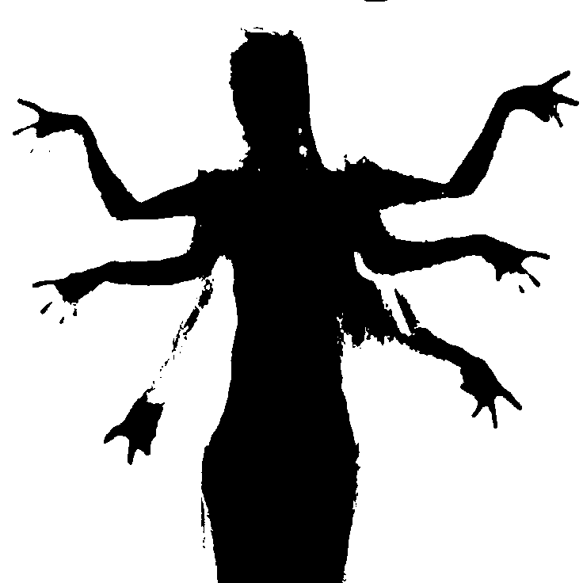

Rien n'est vraiment fait au hasard.
L'aura d'Isyra n'est pas sans pardon, en fait, un simple contact avec peut valoir beaucoup pour les ennemis se trouvant face à elle. Généralement, elle matérialise cette aura autour de sa lame. Cette magie permet, losque l'himaïde porte un coup, d'affliger le corps ou de l'épargner. En revanche, une chose n'est jamais épargnée : l'esprit et la conscience de l'adversaire. Une fois touché, la victime aura des hallucinations, des confusions, des flashs enfouie dans leur esprit qui ressurgissent, tout dépend en fait de l'état de la conscience de son aderversaire et d'elle-même. L'opposant peut vite être amené à une grande vulnérabilité avec un tel jeu mental, un peu comme un châtiment pour tous ses regrets, remords, blasphèmes etc... Néanmoins, cela finit par se répercuter sur la conscience d'Isyra aussi. Son propre esprit est sensible aux réactions face à ses attaques, elle peut ressentir les émotions de ses ennemis, avoir des flashs elle aussi , rien ne lui échappe et cela reste un grand contre-coup pour elle.
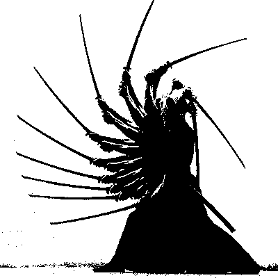

Ne te repose jamais sur ton arme.
Isyra porte une grande importance à savoir agir et réagir rapidement, sa souplesse est donc un excellent atout pour cela. Il est bien de savoir manier son arme, mais sans maîtriser ses appuis, sa détente, sa vitesse, ses réflexes, tout cela ne sert plus à rien. La jeune femme s'est alors entraînée afin que son corps obtienne une agilité déconcertante et des réflexes remarquaqles que toute sa famille ne pouvaient s'empêcher d'acclâmer tant cela était spéctaculaire, ses mouvements étaient légers, doux, rapides, mais plus dangereux qu'ils ne le laissaient paraître.
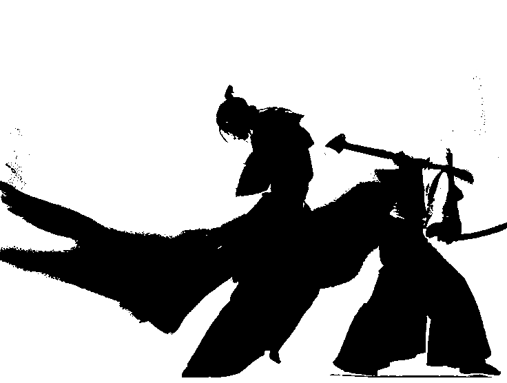
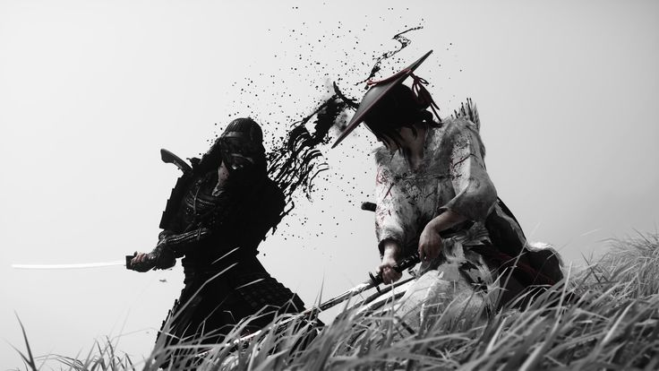
L'abîme des mille visages.
Quand Isyra utilise son aura autour de sa lame, plus elle frappe, plus sa lame récolte d'énergie, de lamentations, de regrets... Sa lame pèse de plus en plus jusqu'à en devenir très peu voir impossible à manier pour son utilisatrice, cette lame représente en quelques sortes la charge mentale de ses ennemis. C'est quand la lame devient trop lourde pour elle qu'elle libère cette attaque qu'elle déteste plus que ses ennemis. Une fois sa lame débordante d’énergie psychique (la vitesse d’hausse dépend encore une fois de la personne face à elle), Isyra devient un instant invisible aux yeux des victimes touchées par sa lame, créant un « territoire » , délimité et dure en fonction de l’énergie contenue dans la lame. Dès cet instant, nul ne peut en sortir, ils ne peuvent qu'affronter leurs péchés sous forme d'illusions bien trop réelles car rien n'est plus profond ni plus éternel que l'envie et l'inimitié. L'Homme vit dans les ténèbres de ces sentiments tandis qu'il lutte contre son destin pécheur. Ce septième sceau ne se terminera que lorsque tous les péchés seront expiés de sa lame mais Isyra reste néanmoins, elle aussi, consumée par les hallucinations des autres, elle ressent tout, l'empêchant bien souvent de se mouvoir dans cette situation.
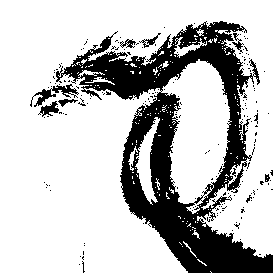
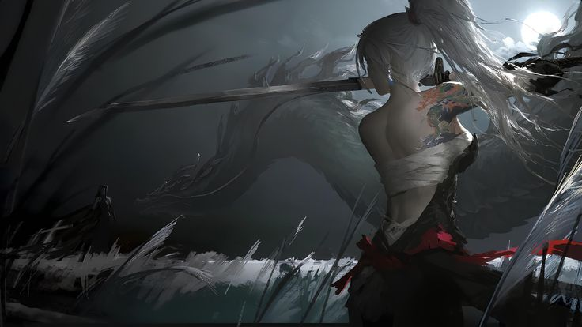
Le sang maudit bénédicteur.
Dans une éducation et des valeurs liées à la pureté, c'est l'impureté elle-même qui vient sauver la pauvre enfant. Elle ne la sauve pas seulement... Le sang de Draconique qui lui a été donné lui a aussi fait don d'une vieillesse ralentie mais aussi de sens extrêmements développés sans parler de l'aura plus pesante et sa prestance qui sont venues avec. Grâce à ce sang inconnu qui coule dans ses veines, Isyra est capable de percevoir un geste (dangereux, menaçant) quelques micro secondes avant que cela ne se produise (comme un 6ème sens) , elle ressent mieux les intentions de ses adversaires, leurs hésitations, les réactions instinctives... Malheureusement il n'y a guère que des avantages, un draconique est sensé avoir un corps capable de supporter et maintenir tout leur flux magique, or Isyra non, ayant pour effet de rendre chaque utilisation de sa magie extrêmement douloureuse dû a son corps non préparé pour tant d'abondance.
761, cette année-là naquit celle que l'on nommera par la suite Isyra. Une neige incessante s'abattait sur les terres d'Arcadia, enveloppant la région d'un épais voile blanc qui dissimulait presque entièrement le domaine isolé de la famille Kurozova. La famille Kurozova, il faut le dire, est une sorte de dynastie sans pour autant contrôler d'autres personnes si ce n'est leur propre famille. Aujourd'hui, leurs valeurs sont très ancrées dans l'avis de prendre en pitié les autres races, comme des êtres inférieurs. D’origine très religieuse, lors de la rebellion contre la divinité liée aux himaïdes, la dynastie a pris un tournant et maintenant cultive une obsession malsaine envers la perfection absolue, comme s’ils voulaient atteindre le niveau des divinités tout en les haïssant.
L'enfant reçut ainsi donc le nom d'Isyra, un prénom choisi dès les premières semaines de grossesse par sa mère,la seconde épouse de Tomomi, une vampire d'origine russe. Son père, quant à lui, était d'origine japonaise, héritage que leur nom de famille symbolisait au mieux. Or, lorsque l'on crut à la mise au monde d'un être angélique, une tragédie tomba soudainement ; sa mère succomba peu après les premières contractions. Alors tout le monde se dit que tout était fini, le père, Tomomi, lui, crut avoir perdu la femme avec qui il comptait tout construire mais aussi leur pauvre enfant. Médecins, sage-femmes, serviteurs... tous baissèrent leurs regards, tous incapables de regarder le visage du grand perdant, le visage de celui qui avait la plus grande hâte face à ce jour qui se devait d'être formidable. Le silence régnait, seul le bruit des outils précotionneusement rangés par les médecins venait déranger cette atmosphère qui n'en devenait que plus lourde.
Tomomi ne lâcha pas une seconde, cela-dit, la main de sa femme. Au contraire, il la resserait davantage, comme pour la retenir, l'empêcher de s'en aller, il refusait un tel sort pour la femme qu'il aimait tant. Les minutes passaient presque comme des heures, les médecins tentèrent de le raisonner, mais rien n'y faisait, se séparer de sa femme voulait dire la laisser partir à jamais. Le pauvre homme laissa échapper une larme. Quand cette larme fut tombée sur le drap souillé, un cri retenti. Lui et les médecins n'osèrent pas y croire, c'étaient bien des cris de bébé, l'enfant était vivante et avait réussie, on ne sait comment, à naître de ce corps. Sans attendre plus longtemps, le père pris dans ses bras l'enfant miraculée, son héritière, son trésor à lui, rien n'y personne ne pourrait lui retirer cette fois-ci.
769, la petite savait à présent marcher. Malgré le drame qui s'était produit, l'héritière des Kurozova ne manqua de rien, elle allait jouer avec les enfants du village le plus proche, s'entraînait même avec son oncle, Shin'en.
Les Kurozova étaient une famille noble, prospère et respectée valorisant au mieux leurs sangs qui n'étaient que du sang d'himaïde ou de vampire. Leur demeure se trouvait loin de toute agitation, sans être pour autant coupée du village voisin. Son père veillait sur elle avec une attention presque excessive, déterminé à la protéger de tout malheur.
Magnus, cet homme déjà si réputé, venait souvent s'occuper de cette dernière, devenant rapidement une personne adorée de Tomomi comme d'Isyra.
Lors de leur première rencontre, Isyra était quelque peu effrayée par son allure ; un grand homme avec une masse musculaire plus que surprenante.
Il suffit de quelques temps à peine pour que l'enfant ne prenne confiance et suive Magnus partout où il allait, cet homme avit un vrai esprit fraternel et protecteur.
Par exemple, il n'était pas rare que le jeune homme ne s'amuse à raconter l'histoire vécue avec ses conquêtes de manière fantaisique, du style le chevalier et la princesse. Chacune de ses histoires ne faisaient qu'émerveiller cette dernière.
D'autres fois, ils jouaient ensemble, Magnus prenant la petite sur ses épaules, se laissant redevenir enfant l'espace d'un instant. Parfois, c'était de petites bagarres où le grand homme faisait toujour mine de se faire battre par la plus jeune histoire de la rendre heureuse.
Si elle l'avait pu, elle aurait suppllié de rester avec lui, juste un peu plus longtemps, juste un instant.
Shin'en, son oncle, était lui aussi très proche de l'enfant. La veille, par exemple, l'oncle entraîna sa nièce au combat muni d'épées en bois, une méthode simple mais relativement efficace. Elle s'acharnait à réussir, il la fit tomber plus d'une fois pourtant, mais tout en gardant ce sourire aimant et chaleureux. Quand Isyra tombait, ce n'était jamais vers Tomomi qu'elle tournait les yeux en premier, mais vers Shin'en. Alors elle se relevait, elle fonçait de nouveau dans un seul et unique but : le rendre fier.
Lorsqu'elle para un coup pour la première fois, Shin'en sourit, pas avec empathie, mais avec fierté.
Pourtant, pendant une fraction de seconde, quelque chose traversa son regard,
quelque chose qu'Isyra était bien trop jeune pour comprendre.
A l'issue de cce même entraînement, l'oncle ramassa ses affaires, saluant sa nièce avant de ne lui tourner le dos. Dans son élan, Isyra couru vers lui maladroitement, suppliant pour qu'il l'attende.
" Shin'en ! "
L'homme se retournait, le visage surpris.
" Je te promets de devenir aussi forte que toi à l'avenir. "
Un regard franc de ses yeux bleus ciel, un regard non pas d'ambition, mais d'admiration.
" Tu me dépasseras."
Sa voix était calme.
Trop calme.
Comme s'il constatait un fait plutôt qu'il ne formulait un encouragement.
C'était là sa seule et unique réponse. Il n'avait pas souri, ce jour là.
L'enfant d'à peine 8 ans était vouée à un futur glorieux, des plus enviables, mais elle, elle n'avait pas l'air d'y prêter grande attention... Tout ce besoin de pouvoir, cette envie de devenir égal aux Volontés, ça ne valait rien à ses yeux, elle détestait même cette idée de vouloir s'élever au rang de divinité, mais peu importe, qui se préoccuperait de ses choix de vie ?
C'était un jour doux et calme, la neige gardait le dessus sur les environs, mais le soleil était tout de même présent, apportant une légère vague de chaleur sur le pays.
Les Miscanthus sinensis blancs épousaient les mouvements et souffles du vent, entrechoquant leurs pétales semblables à des plumes, dessinant à l'aide de leurs reflets comme une sensation de vague tout autour du domaine.
Isyra revenait à peine du village voisin, couverte de légères égratignures à cause de son manque d'attention lorsqu'elle joue. Elle traversait le champ de mischanthus, perturbant presque leur mélodie liée au vent, poussait de son chemin ces fleurs à perte de vue jusqu'à finalement voir la première marche qui menait à son domaine, son chez-soi.
Pieds-nus, chaussures en main afin de ne salir aucune marche, ses pas s'écrasaient contre la pierre légèrement voilée de neige. Son souffle se faisait court, ses poumons ne suivant plus toute son énergie dépensée dans la journée, mais son sourire restait plaqué sur son visage, ne pensant qu'à retrouver son père, son modèle, sa source d'affection.
Après avoir finalement monté toutes les marches en un temps record pour un si jeune âge, elle se précipita jusqu'aux appartements de son père, tirant d'une traite la cloison coulissante de la pièce, prête à sauter dans les bras de son père adoré.
" Papa !-"
Un silence glaciale s'imposa laissant place au chant des fleurs s'entrechoquant comme seule source de son.
Le sourire de l'enfant tomba peu à peu, une sensation bizarre sous ses pieds, son excitation dans les yeux chuta tout comme son rythme cardiaque. Son regard resta figé sur une chose, une seule : le corps de son père allongé sur le sol. Les pieds de la petite fille baignaient à présent dans un bain écarlate, le regard livide de Tomomi fixait le plafond.
"...Hein ?"
774, 13 ans à présent, la petite était sous la garde de son oncle désormais. L'assassinat de son père, lui, restait encore un mystère que nul n'avait su résoudre, enfin, c'est ce que l'on racontait à la fillette. Personne de la famille ne semblait plus préoccupé que ça, Shin'en esquivait même le sujet avec elle, lui répétant que " Chaque homme poursuit son rêve. Chaque homme est torturé par son rêve. " avec ce même sourire compréhensif cachant bien plus qu'il ne le laissait percevoir.
Un soir d'hiver, Shin'en avait emmené sa nièce en excursion dans les hautes montagnes avec lui sous prétexte que l'environnement ne serait que bénéfique pour son entraînement. Le paysage était beau, paisible, presque digne de se retrouver dans un livre de fantaisie tant l'endroit était incroyable. Les flocons se posaient avec douceur au sol, recouvrant davantage l'épaisse mousse de neige recouvrant déjà chaque montagnes ne laissant que les troncs des arbres alentours identifiables. L'oncle et sa nièce marchèrent longuement, s'engouffrant de plus en plus dans les dents des cieux, jusqu'à ce que leurs anciennes traces de pas ne disparaissent, recourvertes par les flocons suivant.
L'homme s'arrêta net, faisant grincer la neige sous ses bottes. Il resta là un moment, comme figé tandis qu'Isyra se questionnait un peu plus chaque seconde avant de n'appeler son nom.
"Oncle Shin'en ? Quelque chose ne va pas ?"
La tête du mentor se tourna lentement, bien trop lentement, comme si quelque chose d'horrible venait ou allait se produire, mais quoi? Qu'est-ce qui pouvait bien se passer ? Pourquoi un silence aussi soudain et inexpliqué ?
Toutes ces pensées se turent en un instant. L'instant de voir ce visage, le visage le plus froid que l'on puisse voir de sa vie, les yeux contenant une rage sans pareil, des traits serrés, presque figés. Cet homme n'était plus son oncle.
Il tourna les talons puis s'avança, écrasant la neige sous ses pas lourds, dégainant son katana, la mâchoire serrée, le regard fixé sur le visage apeuré de l'enfant.
" C'est toi qui a cherché tout ça, toi et ta gueule d'ange. " La lame trancha l'air, laissant un bruit rapide et aigüe dans le vent, manquant de peu Isyra, mais lui laissant tout de même une entaille sous l'oeil gauche, remontant jusqu'au nez.
La pauvre ne comprenait pas, pourquoi diable son deuxième père se comportait-il ainsi du jour au lendemain ? Qu'avait-elle fait?
" J'aurais dû m'en douter depuis le jour maudit de ta naissance, tu n'es pas légitime à cette famille, tu n'as ni valeurs ni principes que nous partageons. "
Un nouveau coup scinda le paysage une fois de plus, Isyra réussi à l'esquiver de justesse, se jetant d'un pas sur le côté, n'arrivant même pas à prononcer un quelconque mot, tout ce qui sortait de sa bouche n'était qu'un gémissement apeuré.
Plus le temps allait, plus le corps de Shin'en semblait allourdit par cette dite rancoeur.
"Mais enfin, oncle Shin'en, que veux-tu dire ?
- Ce que je veux dire ?! Ce que je veux dire, c'est que tu n'aurais jamais dû exister, J'AURAIS dû être l'héritier, tu n'as aucun rêve, aucune ambition, RIEN, tout comme ton père. Mais d'ici l'aube, tu l'auras rejoins et JE serai à la tête de la famille, je reprendrai ma place et mon but."
Sans même avoir le temps de riposter, l'oncle se jeta sur la fille de son frère. Elle, par instinct, dégaina désesperement la lame des Kurozova, la pointant en la direction de Shin'en, mais il était trop tard. Isyra tomba avec son oncle, tous deux amortis dans leur chute par les coussins de neige sur le sol. La jeune fille s'agrippait à la poignée de son arme, tremblant de peur et d'effroi, le visage figé face à celui haineux de son oncle.
Une goutte de sang s'échappa de la bouche de Shin'en, tâchant la blancheur de sa peau d'une couleur écarlate familière à la fillette, avant qu'il ne lâche un étouffement d'agonie. Les yeux de l'himaïde se posèrent plus bas, vers le diaphragme de ce dernier... Il était bel et bien transpercé, par sa lame à elle, l'acier blanc maintenant, lui aussi, corrompu d'écarlate s'étalant sur le chemisier de son oncle, coulant jusqu'aux mains tremblantes de la fille.
Les yeux de l'aîné vacillèrent, le visage pâle, une vision que nul ne peut décrire, il semblait tétanisé, horrifié de ce qu'il lui arrivait.
" Tu n'as fait qu'apporter le malheur dans cette famille... " là n'était que ces derniers mots avant de succomber à l'agonie, le poids mort de corps glissa le long de l'acier, étouffant lentement le corps plus fragile de la nièce.
Un instant, Isyra resta figée, le souffle court, les pupilles écarquillées, fixant le ciel par dessus l'épaule de son oncle à présent défunt, l'esprit vide elle n'arrivait plus à réfléchir à quoi que ce soit.
Manquant d'air dans ses poumons, son corps d'instinct fit rouler le cadavre sur le côté, ce libérant de l'étouffement. Soudain, alors qu'elle comptait s'asseoir, une vive douleur la pris au niveau du foi, reprenant immédiatement ses esprits à l'aide de cette douleur. C'est là qu'elle vit cette même tâche pourpre, pas sur Shin'en, mais sur son habit allant même tâcher et souiller la blancheur hivernale sous son corps.
Comme si son corps avait finalement compris, sa vision devint trouble, incapable de discerner des formes, seulement des couleurs floues, des bruits sourds tout autour d'elle, comme une sensation d'être tombée dans l'eau et de s'enfoncer peu à peu, son corps devenant lourd à porter, puis, plus rien. Elle ne sentit que sa joue brûler au contact de ce duvet glacé.
Des minutes, des heures, des jours, peut-être des semaines ou des mois passèrent après le dernier péché de Shin'en, personne ne le savait, sauf une.
Une lumière vive, l'impression que le monde tourne sous son corps tremblant à cause du froid.
Un battement...
Puis deux...
Une phrase résonna soudainement :
" Il est mort en faisant ce qu'il voulait, pas vrai ? Je parie qu'il était heureux. "
avant de disparaître en écho dans l'âme.
Une impression de se faire planter plus d'une centaine de fois la poitrine, quelque chose respirait.
La tête prête à exploser, des bruits, du mouvement, une voix, des voix...
Elle ouvrit les yeux.
Un plafond blanc, des lumières beaucoup trop agressives lors d'un réveil... Où était passé tout ce paysage enneigé ?
Elle cligna plusieurs fois des yeux, essayant tant bien que mal de rendre sa vue plus nette, de pouvoir distinguer ne serait-ce que différentes formes.
Une fois la vue devenue bien plus nette, ses yeux bougèrent immédiatement, cherchant à comprendre où elle se trouvait, depuis quand...
Son regard parcourut chaque recoin de la pièce : une table d'opération, des murs et un sol d'un blanc peu naturel sans oublier ces nombreuses lumières magiques qui n'aidaient en rien à son confort.
A peine eût-elle le temps de comprendre ce qui se passait que la voix d'un homme retentit :
" La dernière s'est réveillée, prévenez-la. "
Des groupes d'hommes dans des tenues similaires se formèrent alors, un partant hors de vue tandis que les autres se répartissaient avec ce qui semblait être des patients.
Isyra ne se préoccupait pas grandement de qui ces gens pouvaient être, elle se préoccupait surtout de pouvoir bouger mais en vain, tous ses membres étaient engourdis. Mais plus encore que l'engourdissement de ses membres, quelque chose en elle semblait différent, faux, comme si son propre corps ne lui appartenait plus.
Quand un des hommes s'était finalement approché de la fillette, c'est là qu'elle put finalement voir son reflet dans les lunettes de ce dernier.
Un visage pâle et maigre marqué d'une fine cicatrice, mais surtout... Des iris rouges ?
Le coeur manqua un battement, une sueur froide le long de son dos.
N'étaient-ils pas bleus ?
Avant qu'elle ne puisse faire une quelconque remarque, des bruits de pas retentirent depuis sa gauche. Oubliant ses engourdissements, comme par méfiance, Isyra se redressa rapidement, l'inconnu à sa droite sursauta aussi tôt comme si elle n'était pas sensée se rétablir aussi vite.
Un nouveau visage s'offrit à elle : celui d'une femme, une femme qui semblait heureuse ?
Cette dernière se présenta à Isyra, comme si ça l'importait, mais malgré tout elle retint son nom : S.
Elle n'écoutait pas vraiment ce que cette S lui racontait, n'entendant que des bruits sourds et étouffés comme si elle s'était volontairement bouché les oreilles. Seulement, une phrase était apparue nette jusqu'à ses oreilles :
" Le sang de Draconique a pu te sauver. "
" Quoi ? "
C'est tout ce qu'elle avait réussi à dire mais aussi tout ce qu'elle pensait. Comment ça du sang de draconique ?
Ce n'était pas possible. Qu'allait penser sa famille ? Qu'allait-elle devenir ? Pourquoi mêler deux sang différents ? Pourquoi faire ça ?
Son regard se bloqua sur un point inexistant, sa vision s'obstruant peu à peu, le souffle de plus en plus court et rapide, des frissons le long de la colonne vertébrale à chaque inspiration, une sensation de dégoût.
Qu'ont-ils fait à son corps ? Qu'ont-ils touché, remplacé ?
Qu'est-ce qui lui appartenait encore ?
Ses mains vinrent se refermer désespéremment, chacune sur le bras qui lui était opposé, les ongles plantés dans la peau seulement désireux d'arracher cette dernière.
Chaque doigt glissa lentement, traçant le tour de ses bras en laissant cette trace écarlate sous chacun d'eux, contrastant drastiquement avec la blancheur de sa peau.
C'est répugnant.
Trop de temps avait passé. Combien exactement ? Elle ne le savait pas, elle ne comptait plus les jours mais les heures tant elle rêvait de sortir de cet endroit.
A première vue il serait légitime de se demander ; pourquoi ? S se comportait presque en mère avec Isyra et puis, elle l'avait sauvée.
La jeune hybride s'en fichait complètement, au contraire, cela avait même pour effet de la rendre au paroxysme du dégoût envers cette femme.
En revanche, une chose lui était agréable : la présence de cette entité dont elle ne pouvait voir que la silhouette.
Cette même entité était avec elle depuis son réveil, au moins. Elle aidait la pauvre Isyra à vivre avec les hallucinations que lui causaient ses pouvoirs à cause de ses traumatismes, elle lui apprenait à mieux les gérer, ne plus les craindre. C'était comme un ami imaginaire en qui l'on pouvait se confier sans crainte.
Chaque jour elle se forçait à faire mine de s'intéresser aux lieux et ce qu'il s'y tramait mais en réalité elle comptait les portes, les scientifiques, les issues, tout ce qui serait utile de savoir.
Néanmoins, pour une fille de son âge, tout ce qui se passait là-bas n'était que traumatique. Des sujets réussis comme ratés, amenant à des formes abstraites que le conscient aimerait ne pas connaître tant ces formes sont dérangeantes et horrifiantes pour l'esprit.
Tout la répugnait dans ces lieux, tout était trop "propre", tout était trop pesant, surtout la présence de cette femme.
Un soir, l'occasion pour une fuite se présentait enfin, peut-être une occasion un peu trop évidente mais Isyra n'en avait que faire : il fallait sortir d'ici au plus vite.
Le moment venu, tout s'était passé très vite. Quasiment aucun obstacle en vue, personne pour la retenir ou surveiller : tout était presque parfait pour une fuite, comme si quelqu'un avait volontairement laissé une porte ouverte.
Evidemment, elle réussi à sortir de cet enfer sans trop de soucis.
Mais quelque chose manquait, plutôt quelqu'un.
La petite se retourna, s'étant pourtant promis de ne pas le faire. L'entité était là, debout, se pieds ne dépassant pas la sortie. Elle ne bougeait pas.
" Tu ne viens pas avec moi ?
- Je ne peux pas.
- Mais pourquoi ?
- C'est ma maison."
Cette simple réponse lui suffit. Elle ne put qu'acquiescer, regrettant de devoir partir en laissant son ami derrière elle. Les deux s'adressèrent un dernier signe de la main, mais qui laissait entendre que des retrouvailles pourraient bien arriver tôt ou tard, ce n'étaient en aucun cas des adieux.
La petite Isyra tourna alors le dos à cette dernière, avançant fermement sans se retourner, le regard droit devant elle prêt à ne rien la laisser flancher.
Passer d'un lieu renfermé, entouré de choses uniquement magiques et synthétiques à une nature pure et absolue. De l'air frais, le bruit des branches s'entrechoquant à cause de la brise, le ciel surmontant le paysage, c'était un retour au paradis.
Isyra marchait le long d'un chemin entouré d'arbres formant une sorte de couloir sans fin, où elle ne pouvait voir le bout, seulement ce qui se trouvait autour d'elle dans une certaine périphérie.
Le sol et les arbres étaient, eux, éclairés par la lune resplendissante qui se trouvait au dessus d'elle. Le ciel était d'un bleu grisâtre si apaisant qu'en le regardant ses paupières se permettaient un léger relâchement, apaisées.
Peu de choses étaient bien visibles, mais les étoiles et cette même pleine lune suffisaient largement à l'enfant, ça lui suffisait pour avancer.
L'épuisement mental fini par faire surface : ses jambes étaient faibles, à peine capables de soutenir son poids, sa tête brûlait comme si un incendie y avait lieu, tout son corps lâchait prise, elle devait se reposer.
Où vais-je aller ?
N'était-ce pas mieux de rester enfermée là-bas ?
Ce serait plus simple d'attendre la mort ici, en fait.
Il ne reste plus de raison.
Où aller ?
Vers qui ?
Magnus m'accepterait peut-être, lui... Si seulement il était là.
Je ne suis plus qu'une créature des abysses...
En fait, il n'y a peut-être pas de paradis où je puisse m'échapper.
Malgré ces pensées, son corps ne s'arrêtait pas, non, ses jambes avançaient comme par magie, son corps refusait de s'arrêter ici. En fait, elle ne voulait pas abandonner. Elle voulait avancer, avoir un rêve, une ambition, se surpasser, leur prouver qu'elle pouvait s'en sortir et qu'elle valait bien mieux que ce qu'ils pensaient tous.
841. Isyra est enfin devenue une jeune femme aux capacités de combat remarquable, se démarquant dans biens des domaines.
Elle avait migré jusqu'à Epeilor, un lieu où elle se sentait bien plus à son aise, un endroit où elle pourrait peut-être enfin se construire.
La jeune fille était devenue bien plus indépendante et s'est toujours convaincue qu'elle n'avait besoin que d'elle même pour avancer... Mais était-ce vrai ?
Et comment une fille qui semblait perdue aurait pu réussir un tel exploit ? En réalité, Rena, déesse de l’Amitié et des Héros, avait accompagné Isyra dans le passé jusqu'à ce qu'elle trouve un refuge, jusqu'à ce qu'elle soit en sécurité.
C'était grâce à elle si Isyra a pu arriver jusqu'à cet endroit qui fut un renouveau pour elle, une occasion de réaliser un rêve, un but. Elle n'était que trop reconnaissante envers cette divinité, elle lui devait beaucoup.
Malheureusement, même avec une telle réussite, un tourment reste en elle : qui est-elle réellement ? Qu' est - elle ?
Plus le temps passait, plus cette question la hantait et la consummait à petit feu.
De plus, quelque chose la dérangeait au quotidien, un sentiment qu'elle n'avait jamais eu avant cet incident, avant cette renaissance.
Auparavant, Isyra n'avait aucun projet futur, elle comptait simplement vivre, voir où la vie la mènerait. Pourtant, dès lors de son réveil dans ce laboratoir abominable, un sentiment brûlait en elle, une ambition, un rêve qui prenait tout son esprit : exceller jusqu'au paroxysme de la perfection atteignable.
Etait-ce un besoin de vengeance ? Le fait de grandir ? Un effet secondaire suite à cette "opération" ? Ou était-ce lié au sang de ce draconique ?
Ce rêve lui appartient-elle ?
Ou est-ce celui d'un autre ?
Peut-être a-t-elle toujours eu ce rêve ? Après tout, elle avait bien assassiné son oncle, est-ce un signe qu'elle était déjà prête à tout ?
Non, c'est plus compliqué, enfin, pour le moment.
A-t-elle le droit de continuer ainsi ? Le droit de prendre le rêve d'un autre ?
Pourtant, malgré toutes ses interrogations, malgré ce dégoût qui l'accompagnait chaque jour, une chose demeurait certaine.
Elle ne voulait pas l'abandonner, ce rêve qu'elle n'a jamais eu.
Comment vivre sans un rêve ? Sans un but à atteindre ?
Ce rêve la torture.